Master Thief
Score: 0
 Remaining time: 0
Collect at least 5 artworks.
Location:
1st floor in the WALLRAF-RICHARTZ MUSEUM (Cologne).
Difficulty level:
difficult
The museum has one of the world’s leading collections of mediaeval painting, with Stefan Lochner’s “Madonna of the Rose Bower” as its greatest attraction. Other highlights include works by the Baroque masters, ranging from Rubens and Rembrandt to Murillo and Boucher, the German Romantics, French Realism, and Impressionism.
...
...